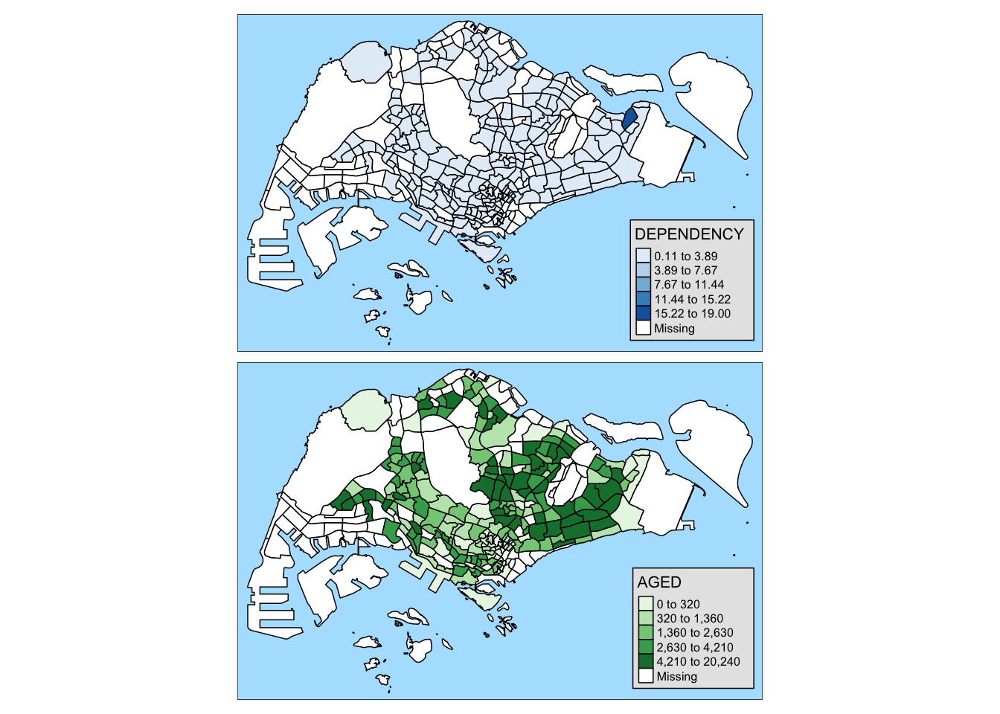

pacman::p_load(sf, tidyverse, tmap)Hands on Exercise 1A: Choropleth Mapping with R
Overview
This hands-on exercise covers Chapter 2: Choropleth Mapping with R.
I learned about the following:
- Creating thematic/choropleth maps with
tmap - Quantile and equal classification
Getting Started
Preparing the datasets
Geospatial
- Master Plan 2014 Subzone Boundary (Web) from data.gov.sg
Aspatial
- Singapore Residents by Planning Area / Subzone, Age Group, Sex and Type of Dwelling, June 2011-2020 from Department of Statistics, Singapore
Next, is putting them under the Hands-on_Ex1 directory, with the following file structure:
Hands-on_Ex1
└── data
├── aspatial
│ └── respopagesextod2011to2020.csv
└── geospatial
├── MP14_SUBZONE_WEB_PL.dbf
├── MP14_SUBZONE_WEB_PL.prj
├── MP14_SUBZONE_WEB_PL.sbn
├── MP14_SUBZONE_WEB_PL.sbx
├── MP14_SUBZONE_WEB_PL.shp
├── MP14_SUBZONE_WEB_PL.shp.xml
└── MP14_SUBZONE_WEB_PL.shxInstalling R packages
I used the code below to install the R packages used in the exercise:
Data Wrangling
Importing geospatial data
To import the MPSZ data set to RStudio, I used the same code chunk in the previous exercise.
mpsz <- st_read(dsn = "data/geospatial", layer = "MP14_SUBZONE_WEB_PL")Reading layer `MP14_SUBZONE_WEB_PL' from data source
`/Users/kjcpaas/Documents/Grad School/ISSS624/Project/ISSS624/Hands-on_Ex1/data/geospatial'
using driver `ESRI Shapefile'
Simple feature collection with 323 features and 15 fields
Geometry type: MULTIPOLYGON
Dimension: XY
Bounding box: xmin: 2667.538 ymin: 15748.72 xmax: 56396.44 ymax: 50256.33
Projected CRS: SVY21Importing aspatial data
The csv data is an aspatial data so read_csv() must be used instead of st_read():
popdata <- read_csv("data/aspatial/respopagesextod2011to2020.csv")Data preparation
popdata2020 <- popdata %>%
filter(Time == 2020) %>%
group_by(PA, SZ, AG) %>%
summarise(`POP` = sum(`Pop`)) %>%
ungroup()%>%
pivot_wider(names_from=AG,
values_from=POP) %>%
mutate(YOUNG = rowSums(.[3:6])
+rowSums(.[12])) %>%
mutate(`ECONOMY ACTIVE` = rowSums(.[7:11])+
rowSums(.[13:15]))%>%
mutate(`AGED`=rowSums(.[16:21])) %>%
mutate(`TOTAL`=rowSums(.[3:21])) %>%
mutate(`DEPENDENCY` = (`YOUNG` + `AGED`)
/`ECONOMY ACTIVE`) %>%
select(`PA`, `SZ`, `YOUNG`,
`ECONOMY ACTIVE`, `AGED`,
`TOTAL`, `DEPENDENCY`)I don’t fully understand this entire code chunk yet but I know it filtered for data from 2020 only and did some aggregations based on the age groups, PA, and AZ. New fields like YOUNG and AGED .
Next, I joined this data with the mpsz data via SZ. However, we still need to make sure that the SZ values are uppercase to match mpsz’s SUBZONE_N.
popdata2020 <- popdata2020 %>%
mutate_at(.vars = vars(PA, SZ),
.funs = list(toupper)) %>%
filter(`ECONOMY ACTIVE` > 0)Then the 2 data sets can be joined.
mpsz_pop2020 <- left_join(mpsz, popdata2020,
by = c("SUBZONE_N" = "SZ"))Lastly, write the rds of the combined data set.
write_rds(mpsz_pop2020, "data/rds/mpszpop2020.rds")⚠️ This failed on the first try so I had to create the
rdsdirectory underdata/before trying again.
Choropleth Mapping Geospatial Data Using tmap
Using qtm()
tmap_mode("plot")
qtm(mpsz_pop2020,
fill = "DEPENDENCY")
I tried to create an interactive map by using view instead of plot but an error about invalid polygons was returned.
Using tmap() elements
tm_shape(mpsz_pop2020)+
tm_fill("DEPENDENCY",
style = "quantile",
palette = "Blues",
title = "Dependency ratio") +
tm_layout(main.title = "Distribution of Dependency Ratio by planning subzone",
main.title.position = "center",
main.title.size = 1.2,
legend.height = 0.45,
legend.width = 0.35,
frame = TRUE) +
tm_borders(alpha = 0.5) +
tm_compass(type="8star", size = 2) +
tm_scale_bar() +
tm_grid(alpha =0.2) +
tm_credits("Source: Planning Sub-zone boundary from Urban Redevelopment Authorithy (URA)\n and Population data from Department of Statistics DOS",
position = c("left", "bottom"))
From this part, I saw that with tm_shape as base, thematic maps can be created by doing + with the tmap actions. I will explore this later but I found a good reference on where to start: https://cran.r-project.org/web/packages/tmap/vignettes/tmap-getstarted.html.
Classification methods
Quantile
tm_shape(mpsz_pop2020)+
tm_fill("DEPENDENCY",
n = 5,
style = "jenks") +
tm_borders(alpha = 0.5)
Equal
tm_shape(mpsz_pop2020)+
tm_fill("DEPENDENCY",
n = 5,
style = "equal") +
tm_borders(alpha = 0.5)
My main takeaway for this is that the quantile classification deals with outliers better. In this data set, there is an outlier subzone. If we use equal classification, the map looks homogeneous and does not provide much information as it cannot be seen how the values from one subzone to the other differ.
With quantile classification, these differences can be seen more easily despite the outlier value.
Color Scheme
The color scheme can be changed by specifying the palette in tm_fill() like below:
tm_shape(mpsz_pop2020)+
tm_fill("DEPENDENCY",
n = 6,
style = "quantile",
palette = "Blues") +
tm_borders(alpha = 0.5)
More colors can be found when running tmaptools::palette_explorer() in the console. However, it requires shiny and shinyjs to work. This is a wonderful tool as it can also simulate how the color schemes look from the perspective of people with color blindness. As these maps aim to communicate, it is important for the color schemes chosen to not just be beautiful, but also inclusive.
Map Layouts
tm_shape(mpsz_pop2020)+
tm_fill("DEPENDENCY",
style = "jenks",
palette = "Blues",
legend.hist = TRUE,
legend.is.portrait = TRUE,
legend.hist.z = 0.1) +
tm_layout(main.title = "Distribution of Dependency Ratio by planning subzone \n(Jenks classification)",
main.title.position = "center",
main.title.size = 1,
legend.height = 0.45,
legend.width = 0.35,
legend.outside = FALSE,
legend.position = c("right", "bottom"),
frame = FALSE) +
tm_borders(alpha = 0.5)
Adding legends to maps is very useful as it provides additional information. However, this feature should not be abused to add multiple visualizations as legend as it can cause more confusion if there is too much information to present.
Map style can also be changed and it is useful to enhance the visual presentation. After doing some research, I found the other available styles in https://cran.r-project.org/web/packages/tmap/vignettes/tmap-changes.html.
tm_shape(mpsz_pop2020)+
tm_fill("DEPENDENCY",
style = "quantile",
palette = "-Greens") +
tm_borders(alpha = 0.5) +
tm_compass(type="8star", size = 2) +
tm_scale_bar(width = 0.15) +
tm_grid(lwd = 0.1, alpha = 0.2) +
tmap_style("natural")
In this example, I used the natural style to make it look like the map is surrounded by water (as it is naturally). Adding “furnitures” like compass and scale can also provide more perspective.
Smaller Maps
tm_shape(mpsz_pop2020)+
tm_polygons(c("DEPENDENCY","AGED"),
style = c("equal", "quantile"),
palette = list("Blues","Greens")) +
tm_layout(legend.position = c("right", "bottom"))
I don’t find this very useful as the maps rendered might be too small to inspect. However, the facets with the region can be useful to see the data based on region.
tm_shape(mpsz_pop2020) +
tm_fill("DEPENDENCY",
style = "quantile",
palette = "Greens",
thres.poly = 0) +
tm_facets(by="REGION_N",
free.coords=TRUE,
drop.shapes=TRUE) +
tm_layout(legend.show = FALSE,
title.position = c("center", "center"),
title.size = 20) +
tm_borders(alpha = 0.5)Mapping According to Criterion
tm_shape(mpsz_pop2020[mpsz_pop2020$REGION_N=="CENTRAL REGION", ])+
tm_fill("DEPENDENCY",
style = "quantile",
palette = "Greens",
legend.hist = TRUE,
legend.is.portrait = TRUE,
legend.hist.z = 0.1) +
tm_layout(legend.outside = TRUE,
legend.height = 0.45,
legend.width = 5.0,
legend.position = c("right", "bottom"),
frame = FALSE) +
tm_borders(alpha = 0.5)
I find this very useful especially if we just want to map a subset of the data. This can be used when we want to highlight information on certain regions.
Reflections
I was exhausted after doing the 2 chapters, and I must change how I do things next week. What I have been doing is understanding each part deeply first before moving on to the next. I think I should do chunks of work first before going back for deep understanding so I have more holistic view of the content and more sustainable for the duration of this course.
I find
tmapvery useful and I am looking forward to using it more as it has so many functions to visualize data. Only one’s creativity limits the possibilities of using it.